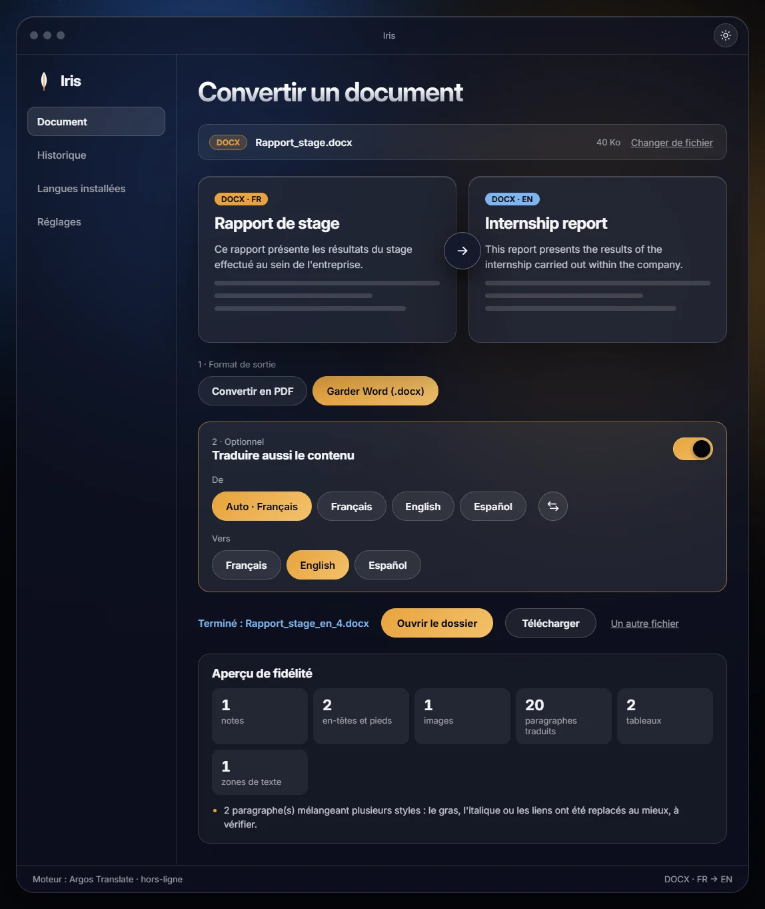
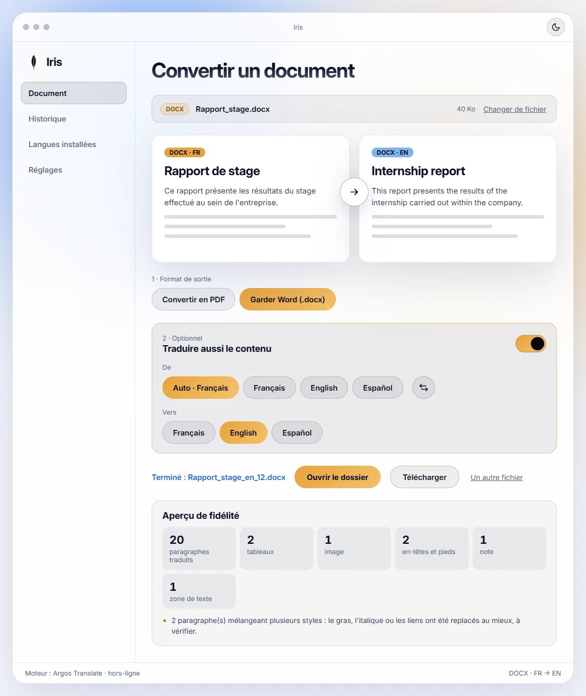

Même mise en page.
Dans un document Word, polices, marges, images et tableaux restent en place : seul le texte change. Un texte plus long peut déplacer des sauts de ligne, et Iris te le signale.
Traducteur de documents
Iris convertit et traduit tes documents Word et PDF sur ton ordinateur, en changeant la mise en page le moins possible. Gratuit, hors-ligne, open source.
Français, anglais et espagnol, dans tous les sens. Le passage français ↔ espagnol transite par l'anglais, avec une qualité un peu inférieure aux paires directes.
Dans un document Word, polices, marges, images et tableaux restent en place : seul le texte change. Un texte plus long peut déplacer des sauts de ligne, et Iris te le signale.
Les modèles de langue se téléchargent une seule fois. Ensuite, coupe le réseau : tout fonctionne.
Gratuit et open source. Pas de compte, pas de clé d'API, pas de limite de caractères.
Les .docx sont traités directement. Un PDF traduit garde ses pages : chaque paragraphe est réécrit à sa place. Les scans sont lus par reconnaissance de caractères.
Word vers PDF ou PDF vers Word, sans rien traduire. La traduction est une option que tu actives quand tu en as besoin.
Tes fichiers ne quittent jamais ton ordinateur. Aucun serveur distant, aucune statistique, aucun suivi.
Six sens de traduction avec deux paires de modèles, et une interface dans les trois langues.
Une fenêtre, quatre onglets, aucun réglage obligatoire.


Gratuit et open source. Récupère le projet avec Git, puis lance-le comme une appli ou une page locale. Il faut Python 3.10 ou plus.
Pour créer des PDF, installe LibreOffice ; pour lire les scans, Tesseract OCR.
git clone https://github.com/<mon-pseudo>/iris-docs cd iris-docs pip install -r requirements.txt python run.pyPour un raccourci sur le bureau : python -m iris install